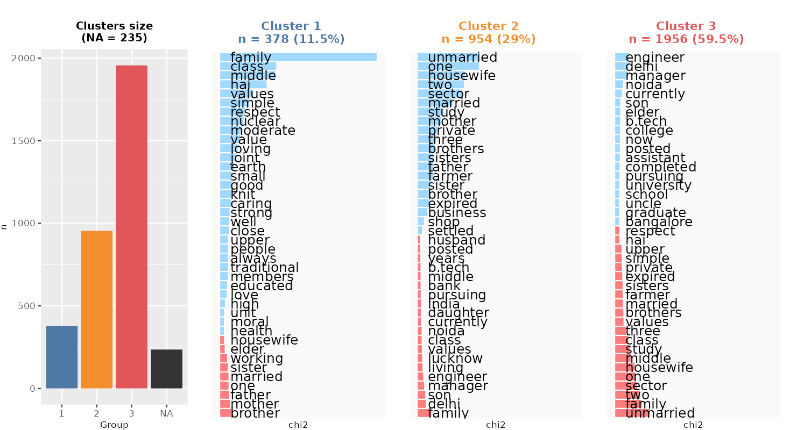

Tutorial (English version)

1 A quick tutorial to use Mendak
Mendak is a shiny app designed to help non-coders to conduct relatively easily data and textual statistical analysis.
The app presents more or less the same statistical tools that are presented using R code here. The interested user can thus also delve into these tutorials to reproduce the analyses directly using the R console.
Mendak app is composed of different tabs:
Data Management tab: Upload and format your dataset (you can upload it in different formats but it has to be a row x column dataset, where one of the columns contains your text to be analysed). If you do not have a ready-made dataset, use the sample dataset. This dataset is an excerpt (of 1,000 profiles) of a database web scraped from an Indian online matrimonial website, that we analysed in this paper. The information present on each row correspond to the publicly available information of a user describing oneself, their family, their desired partner. Users all reside in Uttar Pradesh, India.
Descriptive Statistics tab: Run univariate and bivariate statistics on the quantitative and qualitative variables of the dataset.
Textual Analysis tab: Clean and analyse the text corpus contained in one of the columns of the dataset. Different analyses can be conducted and in case a cluster analysis is conducted, new variable(s) can be added to the dataset to be analysed in the Descriptive Statistics tab.
2 Upload and clean the data
In the Data Management tab (“Upload and download”), start by uploading your dataset. Note that the app accepts csv, xls, xlsx, RData files. The dataset should have one row per text, where the texts are stored in a column. Other columns are properties of the texts (i.e. the corpus characteristics).
The sample dataset is in csv format and can be uploaded by clicking on “Load Sample Data.” Here the dataset contains two different text columns (Desc_family: where each matrimonial profile has described their family background and Desc_desired where users mention what sort of partner they are aspiring to meet).
By default, the app tries to recognize the “type” of the variables contained in the dataset. They can be of three different types:
If a variable is quantitative (e.g. the age in numbers) then it is stored as “numeric”
If a variable is qualitative with a small finite number of categories (e.g. sex with male or female categories) then it is stored as “factor” (note that a factor variable can only have a maximum of 10 different unique categories-or levels, otherwise it will be stored as “character” by the app).
If a variable is qualitative with a large number of different values and each item is long (in the number of characters), then it is coded as “character.” These variables are the ones the app will be able to conduct textual analysis on.
It is important to set up the variable type of all variables when uploading the dataset because it conditions the analyses one can do.
This tab offers a few data cleaning possibilities:
Change name of variable
Change name of categories for qualitative variables
Change variable type (if possible)
Change the order of categories (levels) for factor variables. It is useful to run descriptive statistics, for instance to re-order the Education levels in a logical way. To achieve this, click on the three small horizontal lines and drag a category up or down
Change the labels of categories for factor variables
Do not forget to click on “Apply Changes” after modifying a variable. The dataset can be inspected in the “View” tab.
Other data cleaning options (recoding, etc) are not available on this app and should be done prior to uploading the dataset on the app.
3 Descriptive statistics
The second main tab of Mendak allows to explore non-textual variables of the uploaded dataset by running univariate and bivariate statistics. Note that no inferential statistics are available here; the purpose is to know the structure of the dataset.
All cases of data types are taken into account and for factor variables, it is possible to compute both frequency counts (N) or proportions (%).
4 Textual Analysis
The most interesting (and less straightforward) tab is the one to run textual analysis.
4.1 Text cleaning
First, one has to clean the texts to run statistical analyses. Mendak allows you to select the variable to clean among variables of type “character.”
The first options are rather common “cleaning” options derived from the quanteda package and allow you to delete a number of “polluting” features of text to concentrate on words. So I recommend removing the punctuation from the text, the numbers, symbols (e.g. *$`£), to convert to lowercase (so that Text is equivalent to text) and to remove stopwords (based on a quanteda word bank, including pronouns, articles, prepositions, auxillary verbs…). This last option is available in English and a few other languages.
You can also remove words manually from the texts, for instance if you see that a word is highly frequent but does not really bring anything to the analysis (for instance, for the “Desc_family” variable we are interested in how users describe their family, and we know that “family” is going to be a very frequent word, just like parent, father, mother, etc).
An option is also available whereby you can conduct more thorough text cleaning, using automatic text recognition and annotation based on the UDPipe word banks. The idea is to code all the words of the texts by comparing them to a word bank dictionary (which depends on the language you are working with).

Then two different options are available:
Select words depending on their “form.” For instance, you may consider that working with nouns, adjectives and verbs is rich enough to grasp the variety of the different topics in a corpus and that other word forms will confuse the analysis.
Lemmatize the corpus. Lemmatizing means grouping together the different inflected forms of a word to be analysed as a single item, for instance “better” has “good” as its lemma, “families” has “family” as its lemma, etc… There are different rules to lemmatize and the app only suggests an automated version here. I recommend lemmatizing only in a second step after exploring the analyses without lemmatizing to avoid collapsing cats and dogs together.
In general, this cleaning step using UDPipe takes a bit of time to run and one may well not attempt this procedure on large corpora.
I included an option to remove short words. In fact, they are often “stopwords” dealt by the above option but in the example used here, there are a few hidden hindi short words (in latin alphabet) that are included in the corpus which I try to get rid of in this way.
I also include an option to select words according to their minimum of occurrences in the corpus. Many words are very rare. There are always words that are “hapax” (occurring only once) and the Zipf’s law usually predicts that the most common word occurs approximately twice as often as the next common one, three times as often as the third most common, and so on. The threshold should not be too low (it will tend in the clustering to produce clusters with a few number of texts) but not too high either (if we keep only common words then they are not distinctive between the texts of the corpus).
Finally, the last option is not a data cleaning step as such but rather a feature of how we split the texts. Indeed, to conduct cluster analysis, we may want to cluster paragraphs (called segments in the app) rather than entire texts. Besides, to analyse co-occurrences of words (what are the most frequent words that appear conjointly with other words) we will to this at the segment level rather than at the text level. Here the texts (family descriptions) are rather small (38 words on average) so I split the texts in segments of about 10 words (the function tries to recognize line breaks, commas and dots to cut the segments appropriately).
After clicking on “Clean Text,”, some summary statistics appear, another tab presents the frequency distribution of cleaned words (named features or tokens) and a third tab shows a pretty word cloud of the features within the corpus. Depending on the options you select, different words are kept in the analysis.
4.2 Dual word cloud
Rather than computing a word cloud on the entire corpus, it is possible to compute the most distinctive words by group (based on the qualitative variables of the dataset). The distinctive words use a “keyness” measure based on the chi2 statistic (and can be found in the Table tab).
4.3 Stratified occurrences
Mendak also allows to search for specific words and calculate the proportion (%) of occurrences (i.e. the number of times a word is mentioned over the total number of cleaned occurrences) or documents (i.e. the number of documents mentioning it over the total number of documents) of the words by groups. The groups correspond to the qualitative or quantitative (categorized using quartiles) variables of the dataset.
For instance, here, “homemaker” (a synonym implying different a perspective from “housewife”) is slightly more often used by female profiles (but is it the reverse for “housewife”?). The list of searchable words correspond to cleaned words.
4.4 Context
In a more qualitative fashion, one can search for the context of words in sentences. Just type a word (here, a not cleaned term!) and Mendak will show the different sentences in which it is used.
4.5 Co-occurrences between most frequent words
The study of co-occurrences in textual analysis has been underlined as a key improvement for getting insights into texts. Here, we define a co-occurrence is defined as the association that connect words within a text, these associations being at the segment (paragraph) level rather than in the entire text. Two words co-occur if they are used in the same segment of a text.
First, one can visualize the top 50 most frequent words (cleaned words) in the corpus and their level of co-occurrence between them as presented on the network below. The width of lines represents the degree of co-occurrence (a larger width means that words co-occur more often) and words centrally positioned co-occur more with other words.
Here, words qualifying family members are the most central in the graph. Notice how family is both densely connected to members and to middle and class (themselves connected) and to values. Does it suggest the three patterns by which users present their family (members, socioeconomic, values)?
4.6 Co-occurrences of a specific word
One can also search for a specific word and their most frequent co-occurring words. Here, I searched for “settled” because I want to know whether it is used as an adjective (“well-settled”) or a verb designating the location of living. The result suggests that it is both.
4.7 Document classification
One of the key feature of the app is to include classification algorithms to cluster texts and identify different topics/lexical worlds.
Details on how the algorithms (based on divisive hierarchical clustering) work:
The basic one is briefly presented here in English, more details can be found in the English documentation of Iramuteq (see p. 11).
Julien Barnier also provides a thorough description of the algorithms (we use the exact same functions from the rainette package)
In French, Julien Barnier’s description is probably the best. You can also watch his tutorial at the Mate-shs seminar.
Different classification algorithms can be performed. If the analysed texts are rather short, I recommend performing the classification on the “documents” (i.e. the different texts, one row per text in the initial dataset).
Here, I classified the texts into three different clusters. The first one includes 193 texts (almost 20% of the texts), the second one corresponds to 520 clusters (more than half) and the third one includes 281 texts (28% of the texts). Note that 6 texts could not be attributed any class (because after cleaning these texts, they do not contain enough words to be associated to other texts).
The first cluster refers to the description of the family as a single unity, described by its values, its socioeconomic status and its living arrangement. The second cluster refers to family descriptions based on individuals’ (members’) occupational position (at the top of the professional occupational scale). The third cluster also refers to members’ occupational or economic activity status, but usually described in less advantageous positions or independent ones (business, farming).
This kind of figure is called a “dendrogram” and it shows how close and how distinct clusters are from each other, e.g. cluster 2 and 3 present a higher similarity compared to cluster 1.
On the app, it is also possibly to read the different descriptions clustered by the different classes and to search words within them.
4.8 Segment classification
We can also try the segment classification (dual one) even if our texts are rather short here. Interestingly, the clusters are rather similar to the ones observed above except that cluster 2 and 3 are inverted.

Iramuteq users usually perform Correspondance Analysis after running their classification algorithm. This is particularly helpful when running Dual Descending Hierarchical Classification as no dendrogram is visible to observe how similar or distinct clusters are from each other.
A Correspondance Analysis is run on the matrix ‘clusters x features’, where we keep only the most positively-associated features of each cluster (using the chi2 measure). This analysis is similar to the one that can be obtained from Iramuteq. We attribute words to one cluster (and color them accordingly) based on how the highest positive association in a given cluster.
The first dimension (horizontal axis) always depicts the most salient distinctions between clusters while the second axis depicts more secondary distinctions. Clearly the factorial plan shows us that cluster 2 and 3 are relatively more similar to each other and that cluster 1 is very distinct from the other 2.

Notice how some Hindi words pop up in these different analyses, because I haven’t used the UDPipe functions when cleaning the texts.
How many groups or clusters of documents should we keep in the final partition?
This is an exploratory tool so the best way is to first analyse the two groups and interpret how they are different from each other, then the three groups, etc… At each step, we analyse what distinction emerges with the new cluster.
As a rule of thumb:
Keep as many groups as you can interpret them
Remember that your goal is to be able able to interpret distinctions in your corpus so it is not ideal to have too many clusters! Personally, I find that beyond about 8 clusters, classifications are not informative as it is hard to grasp at a glance the full distinctions.
4.9 Adding and analysing classes w.r.t. other variables
After classifying the texts, it is possible to add this information to the initial dataset:
If the classification algorithm was performed on texts/documents, then each row of the dataset can be attributed a cluster number stored in a unique variable (choose the variable name before adding the cluster variable in the dataset).
If the classification algorithm was performed on segments, then each row of the dataset potentially partially belongs to different clusters as each row = one text divided in several segments. In that case, the app creates different variables (as many variables as the number of clusters in the partition) and for each column calculates the proportion (in %) of the segments of the text that belong to this cluster. For instance, if for text 1, 3 out 10 segments are classified in cluster 1, then the cluster 1 column will put 30 for this row.
These variables can then be analysed in the Descriptive statistics tab.
For instance, the document classification variable (called “Classif”) analysed along with the family variable (joint or nuclear family of the profile user) shows that cluster 1 (describing one’s family as a unit described by its values, socioeconomic position and living arrangement) is more typical of users coming from joint families.
A similar trend can be seen when using the variables from the segment classification, as on average a third of the text descriptions of users coming from joint families belong to the first cluster versus less than a fifth of text descriptions of users belonging to nuclear families.